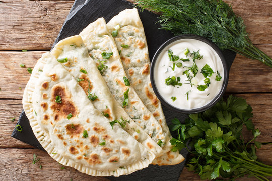

Qutab

Description
Qutab is a delightful Azerbaijani dish that holds a special place in the
cuisine of Azerbaijan. Qutab can be described as a type of savory stuffed
pancake or turnover. The thin dough is filled with a variety of delicious
fillings, such as ground meat, herbs, cheese, or vegetables. Qutab is
typically cooked on a hot griddle, resulting in a crispy exterior while
the filling remains tender and flavorful. It is often served with a dollop
of yogurt or a tangy herb sauce, adding a refreshing element to the dish.
Qutab is a popular street food in Azerbaijan and is enjoyed as a quick
snack or as part of a larger meal. Its versatility and delightful flavors
make it a beloved dish among locals and visitors alike.
Ingredients
Dough
- Whole wheat flour - 1 cup
- All Purpose flour - 1 cup
- Salt - ½ tsp
- Oil - 2 tbsp
- Boiling water - as needed (about 3 to 4 cups)
Filling
- Paneer - 1 cup (or any crumbled cheese)
- Onion - ½ cup (finely chopped)
- Spring onion - 3 (finely chopped with the greens)
- Mint leaves - ¼ cup (chopped)
- Cilantro - ¼ cup (chopped)
- Crushed red pepper flakes - 2 tsp (or as needed)
- Salt - to taste
- Oil - 1 tbsp
Steps
Dough
- Boil about 4 to 5 of the water in a pan.
- In another pan combine the flour and the salt.
-
Slowly add the boiling water and stir with a wooden spoon. Keep adding
water until a solid mass forms. At this stage cover the dough for a few
minutes to cool it down enough to handle.
-
Now add the oil and knead the mixture into a soft dough. Sprinkle more
warm water if needed.
- Cover the dough and let it rest for about 30 minutes.
Filling
-
Heat oil in a pan and saute the onions and spring onions until just soft
and translucent.
- Add the salt and crushed red pepper to this mixture and mix well.
-
Let this mixture cool down and then add the grated / crumbled paneer,
chopped mint, and cilantro and mix well to combine.
To shape and cook the Qutab
- Divide the dough into 8 equal pieces.
-
Dust each ball with enough flour and roll it into a very thin circle.
Place about 2 tablespoon of filling on one half of the rolled dough and
cover it with the other half.
-
Seal the edges well and cook it on a hot cast iron or a heavy pan. Apply
oil on both sides and cook until golden brown.
- Let the Kutab cool a bit and then serve.
Back to Home Page